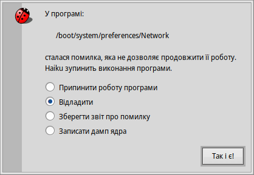
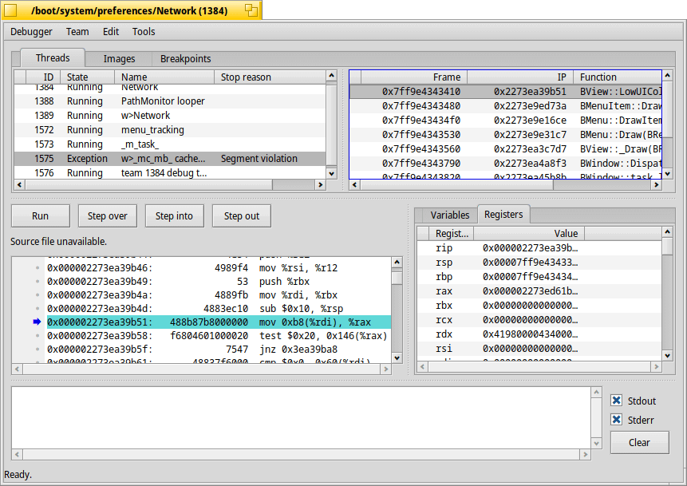

Debugger (Відладчик)
| Deskbar: | ||
| Розташування: | /boot/system/apps/Debugger | |
| Налаштування: | ~/config/settings/Debugger settings ~/config/settings/Debugger/ |
Debugger – це програма, яка не дуже потрібна звичайному користувачеві. В першу чергу, відладчик використовується розробниками для пошуку помилок у програмах. Іноді ці помилки призводять до збоїв, і тоді навіть кінцеві користувачі стикаються з відладчиком. Коли програма аварійно завершує роботу, Ви бачите таке сповіщення:
Вам пропонується чотири варіанти реакції на аварійну ситуацію:
почистить залишки після аварійного завершення програми, але більше нічого не зробить.
запустить Debugger для подальшого дослідження.
створює звіт про помилку, який зберігається у вигляді текстового файлу на Робочому столі і може бути надісланий електронною поштою розробнику програми або прикріплений до заявки (тікета) на його «багтрекері», якщо він доступний.
Звіт про помилку містить інформацію про апаратне забезпечення (тип процесора, використану пам'ять, тощо), точну версію Haiku та всю доступну інформацію про стан системи, яка може мати відношення до аварійного завершення програми.створює, можливо величезний, дамп стану системи. Під час оформлення тікета про помилку краще спочатку прикріпіть звичайний звіт про помилку, а дамп ядра надавайте лише за запитом.
Варіант реакції на аварійне завершення програми за замовчуванням можна встановити у текстовому файлі ~/config/settings/system/debug_server/settings.
Файл має формат у стилі driver_settings:
default_action user
executable_actions {
app1 log
/path/app2* debug
}
Допустимими значеннями для default_action є:
| user | Сповіщення користувачеві з вибором варіанта. | |
| kill | Припинити роботу аварійного процесу у фоновому режимі. | |
| debug | Запустити відладчик аварійного процесу. | |
| log / report | Зберегти звіт про помилку і припинити роботу процесу. | |
| core | Зберегти (можливо дуже великий) дамп ядра і припинити роботу процесу. |
Якщо default_action не встановлено, застосовується варіант «user».
Секція executable_actions містить перевизначення певних варіантів дії за замовчуванням. Вони мають вигляд, наведений вище, де окремими рядками можуть бути лише назва процесу або шлях із символами підстановки і значення для default_action.
Опис використання власне самого Debugger виходить за рамки цього посібника, який орієнтований на потреби звичайних користувачів Haiku. Для повноти картини, ось вікно, яке з'явиться, якщо Ви виберете опцію у наведеному вище сповіщенні:
Коли Ви почнете трохи колупатися, то швидко побачите, що Debugger є одним із найскладніших і найдосконаліших інструментів для Haiku. Якщо Ви розробник і звикли до графічних відладчиків на інших платформах, багато функцій будуть Вам знайомі.
Нижче наведено кілька посилань, які можуть пролити світло на тонкощі відладчика Haiku. Якщо у Вас є конкретне питання, Ви можете задати його у списку розсилки для розробників. Якщо ви знайдете більш корисні ресурси, будь ласка, створіть «багрепорт» з цією інформацією.
| Debugger Reference Manual | Це найдокладніший документ про роботу з відладчиком (у форматі PDF). | |
| Blogposts | Декілька статей про Debugger, в основному написаних Рене Голлентом після впровадження нової функції. | |
| BeGeistert 026 video | Відео зустрічі BeGeistert у 2012 році, на якому Інго Вайнхолд демонструє стан Debugger на той час і показує інші цікаві інструменти, такі як профайлер для виявлення вузьких місць. |